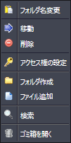
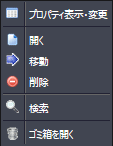

SecretFilesは、ブラウザを使ったWebアプリケーションですが、その操作性を向上させるために、マウスの右クリックも利用することができます。
フォルダ1とフォルダ2および中央ペインにて、フォルダやファイルを表示した箇所でマウスの右クリックをすると、下図のように表示します。
 左ペインのフォルダツリーにてマウス右クリックした場合
 中央ペインのファイルリストにてマウス右クリックした場合
マウスを移動し、表示されている項目の上で左クリックすると、所定のペインが開き、すぐに作業を進めることができます。